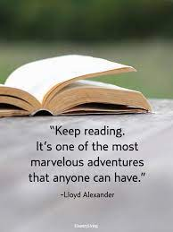
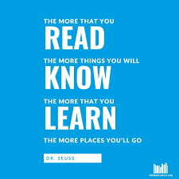

Scheduling Drones
Develop Reading Skills
How to Develop Reading Skills When You are Not a Reader

The power of reading is considerable, especially for those who read every day. Reading helps broaden the imagination, engage your creativity, and light reading can take you to places that cannot be reached in any other way. A movie or television show tells you a story, reading is creating the story in your mind.
For those who want to keep a young, healthy and engage mind, regular reading is essential. If you are not a reader by nature, here are a few tips that will help you develop your reading skills.
Start with subjects that interest you
You have every subject known to humanity available, so choose something that is of interest to you. For fiction, you can start with mysteries, suspense, horror, romance, action and adventure, or any subject that engages your mind.
The same is true for non-fiction material. You can learn a new skill, expand your knowledge on a specific subject,or find out more about an area you knew little about. By starting with what has interest for you, you will have what is necessary to stay the cource and develop your reading skills.
Read for atleast 15 minutes each day.
It's important that you choose a time of day to read for at least 15minutes.To develop your reading skills, you must set aside the time necessary to acieve your goal. Just like you set aside time with your family, engage in exercise, or complete your work, you must also set aside 15 minutes each day to start the process of reading.
Developing good habits like reading takes consistency and persistance. Find a time during the day, such as on your break, at lunch, or when relaxing at home, to spend 15 minutes reading. You can start with a newspaper if you are interested in local events. Or, you can choose a book of fiction and take an adventure.
By reading a chapter a day, you'll find your reading skills will improve quickly.
Set a Time to read daily

Now that you have your 15 minutes, it is important to make it at the same time if possible. Remember that you can be flexible when setting a time to read everyday. However, good habits develop when you engage in an activity at roughly the same time.
This is because you will start to look forward to the time when you can get away to read. It becomes a welcome break for your day when you can engage in an adventure of the mind. Plus, it helps to develop the habit of reading, which in turn expands your reading skills.
Try to choose the same time of day during the week and then be more flexible on the weekends or days when you are not working.
Take the 15 day reading challenge
Now that you have started setting aside time each day, it's time to set aside 15 days and take a reading challenge. The challenge can be about any reading material, but for most people, it means reading and finishing a novel in 15 days. You can choose a classic adventure or a modern suspence story. Whatever peaks your interest is the type of novel that you should read.
Spending 15 days reading the same book wil not only improve your reading skills, it will also help you get immersed in the material. Remember that you can read non-fiction as well, such as a biography of a famous person or a breakdown of a renowned event.
Expanding your reading material